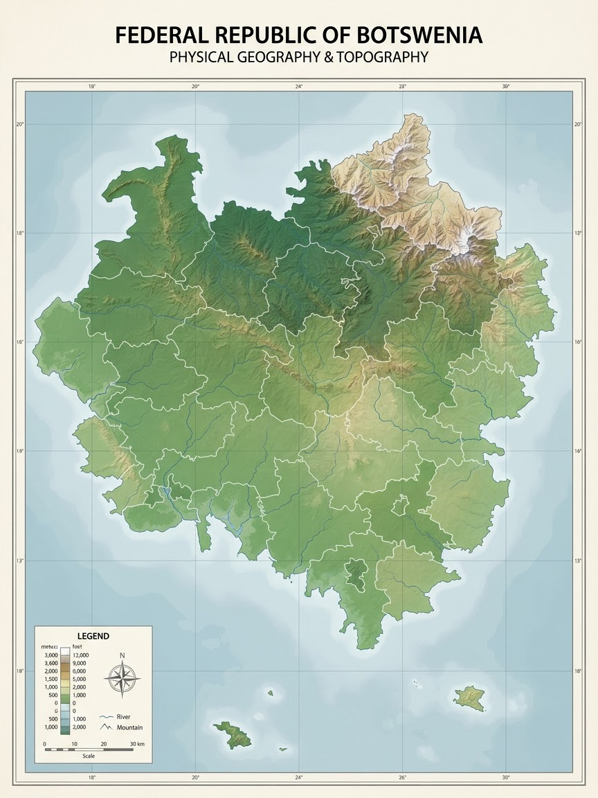
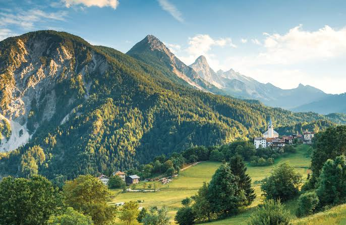
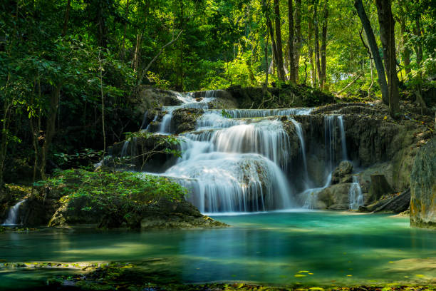
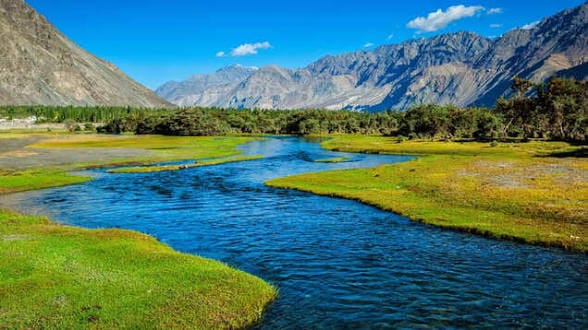
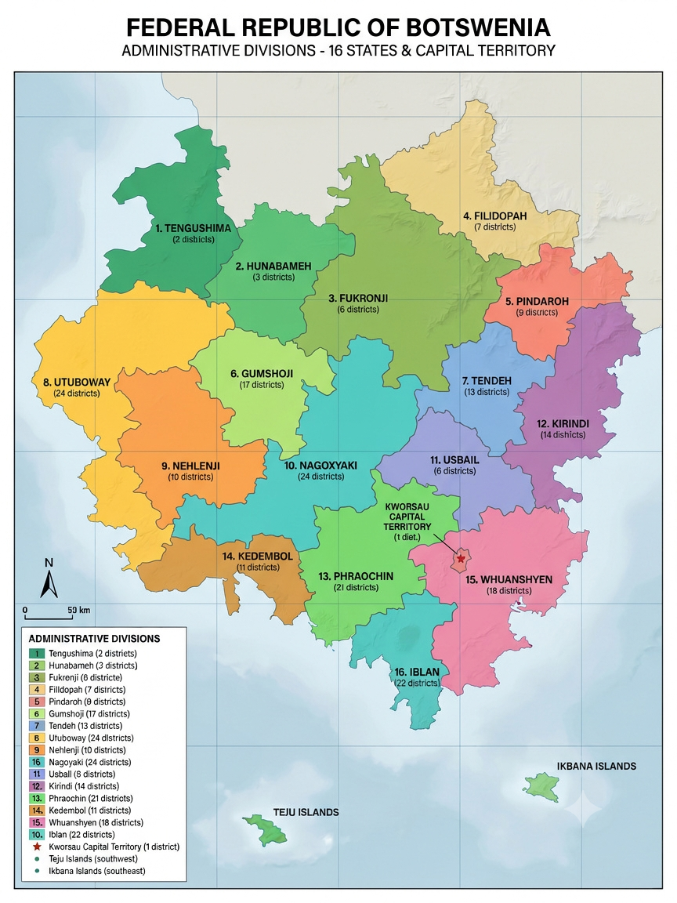

THE GEOGRAPHY OF BOTSWENIA
Discover the land, mountains, rivers, waterfalls, forests and natural landscapes of the Federal Republic of Botswenia.

The Federal Republic of Botswenia is a peninsular nation with a diverse geographical landscape. It is surrounded by the Indian Ocean to the west, southwest, south and southeast. Its northern, northwestern, northeastern and eastern boundaries are shared with Bangladesh and Myanmar.
One of the most significant geographical features of Botswenia is the Yakambet Ranges, which form a natural border. The ranges extend approximately 500–1,000 kilometres and reach heights of around 5,000 metres.
The Yakambet Ranges play an important role in the country's rainfall patterns. Moist winds originating over the Indian Ocean encounter these mountains, rise and cool, and undergo condensation, resulting in rainfall. Consequently, the northern and northeastern regions receive some of the highest annual rainfall in Botswenia, at approximately 1,000 millimetres per year.
One of the most significant geographical features of Botswenia is the Yakambet Ranges.

Botswenia experiences a tropical, monsoon-driven climate. Occasionally, some moisture-bearing winds pass over the Yakambet Ranges and continue towards Myanmar.
The country has a remarkable variety of natural landscapes, including dense forests, ocean coastlines, beaches, snow-covered mountains and hills. These geographical features contribute to the country's diverse natural identity.

Botswenia is home to a total of 2,340 waterfalls spread across its administrative regions. These waterfalls form an important part of the country's natural geographical landscape.
The waterfalls are distributed across the Kworsau Capital Territory and the sixteen states of Botswenia. Their regional and district-wise distribution provides a detailed picture of the country's natural water features.

The Federal Republic of Botswenia has a total of 712 rivers distributed across its geographical regions. These rivers form an important part of the country's natural water network.
Alongside its 712 rivers, Botswenia also has more than 1,000 tributaries. These tributaries contribute to the country's extensive river network and geographical water systems.
Kworsau Capital District alone has nine rivers. Further details about the rivers and their district-wise distribution will be covered in upcoming sections of ExploreBotswenia.
Further information about individual rivers, their locations and their district-wise distribution will be presented in the detailed geographical sections of ExploreBotswenia.

The Federal Republic of Botswenia is administratively organised into 16 states and one Capital Territory, comprising a total of 208 districts. These administrative divisions form the foundation of the country's internal governance and geographical organisation. The districts are distributed across the Capital Territory and the sixteen states as follows:
Kworsau Capital District
Jafna District, Ilabondo District
Ordayan District, Singaranchiborai, Uttabaya
Dantéwara, South Dantéwara, Samarasy, Digonk, Piyandol, Nygara
Batlayam, Simbaro, Iraba, Ilabara, Naikent, Sibarong, Illor
Banticola, Ambaora, Ilagong, Phyukent, Dumrangsen, Irachibola, Murandul, Ilyachigang, Sinparangy
Urandol, Yandaraho, Yandranjo, Murangel, Siunan, Giandol, Ilyangar, Pattmayam, Byongak, Tyanming, Illapuraya, Ilpayam, Tianbul, Kirandul, Sitabon, Sinbaro, Sriranchibaroy
Sinabul, Urunga, Huwatpay, Sinagony, Piulbaroy, Basutobey, Kimpol, Huasa, Sinuiyat, Tibalom, Psaeundong, Irambol, Syanban
Kinbol, Rylajon, Kiuhal, Manalay, Bibongay, Birangay, Sinambol, Irbayan, Maighunsaray, Ilangty, Tinbahar, Kisanbaroy, Esanbol, Yandrangjobaroy, Subaranaya, Surabanaya, Elangun, Hyupanja, Iragbaroy, Kibahol, Irshabon, Kimbultan, Nirbunya, Yahandorey
Kishbiul, Kirboya, Kiritangibaroy, Tiringalibaroy, Ishmuya, Pindok, Hurbandubaroy, Rikarsibay, Kimbashol, Kiritinganaya
Bishkulniyan, Bihagoya, Niranbon, Pinangsey, Ilaboyan, Ilmasoyan, Kirinbaroy, Ugutbaroy, Bakshayan, Mirandulan, Kirbasan, Kitangbol, Kiringanam, Bishyon, Mihakul, Kulayanta, Iratang, Buhajoy, Sinirambaroy, Ilmoha, Kistanbey, Hiwangpary, Sigalarayalon, Baligamy
Pattyaham, Phukeng, Ilano, Digarsy, Illyabayama, Ingtur
Minnamor, Phidingpho, Nalymalu, Igadbo, Kunjudi, Yusuk, Pilhoy, Gimangoto, Illyparani, Haipatbay, North Haipatbay, Haipatbay SE, Kilingpon, Ebaroya
Indarangsen, Ijangbey, Chanyoi, Gyedu, Dingmaopha, Kihlinbay, Kyenzu, Kyenzu Muhai, Irado, Irado SW, Tilingilamphong, Urungibaroy, Isrambol, Endibaroy, Indpingbao, Kiramabaya, Siashol, Miontagay, Cormondangey, Igadmamba, Ilnasoy
Hirimbujan, Kirambujan, Tiringibujan, Dilingbujan, Panduaha, Bimangsey, Shiribaroy, Sinagel, Sinangol, Piundal, Birunbagay
Shindasey, Didinbasay, Disingaphao, Ulurbi, Kyenchin, Bidangon, Ilayahan, Birungaya, Ilamondy, Iriwangay, Khirunchin, Kibulbaroy, Kintinga, Bhusanbashoi, Bundayhen, Hirunji, Hidinga, Didangjan
Pishubel, Yendehen, Urabmalay, Sinlongpo, Nagatsey, Biulby, Chiranga, Binrabatan, Piusholbey, Igutbay, Ilyanba, Iligunnhai, Kiritabujan, Byushoin, Kaushoen, Diushanbarey, Bilaghoi, Kusunji, Kiringabolhay, Ilbahayman, Kegundin, Kirungbandey
Total: 208 districts (1 Capital Territory and 207 districts distributed across 16 states). Each state contains between 2 and 24 districts.
Each state consists of multiple districts, contributing to the geographical diversity and regional organisation of Botswenia. Detailed information about all sixteen states and their respective districts will be presented in upcoming sections of ExploreBotswenia.
This is an introduction to the geographical identity of Botswenia. In the upcoming detailed sections of ExploreBotswenia: Classic, readers will discover the Yakambet Ranges, the country's waterfalls and rivers, its geographical characteristics, and the natural landscapes of its sixteen states and 208 districts.